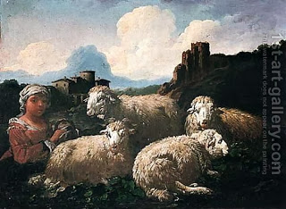

Shekalim 20 - Found animals
If one found an animal in the environments of Jerusalem, then in the times of the Temple it was most certainly an offering that got lost. If so, we need to determine what kind of sacrifice it was. If it is a male, we assume that it is a burned offering, but if it is a female, then it is a peace offering. But why?
Granted that a female animal cannot be brought as a burned offering, and we can assume it is a peace offering. But a male animal can be brought as a peace offering, why do we assume that it is a burned offering? The Talmud suggests a few explanations: that we are really talking about one who consecrates money in order to resolve this situation, or that we don’t mean that we really bring it as an offering, but rather we exchange its designation, but finds all of them lacking. Finally Rabbi Yakov suggests the following: the court makes a stipulation that in the event a sacrificial animal is lost, then its designation by the owner becomes invalidated retroactively, and now it transpires that it always was a burned offering.
The Talmud then discussed other similar conditions that the Court made for the betterment of society. For example, if one finds an animal like above and brings it into the Temple, it used to be that he would be required to bring the libations to go with it. On hearing this, people started leaving the found animals in place. The Court then made a stipulation that the money for the libations (wine and flour) should come from the communal funds, that is, shekalim.
Art: Landscape With Animals And A Drover Resting By A Tree by Dirk van Bergen